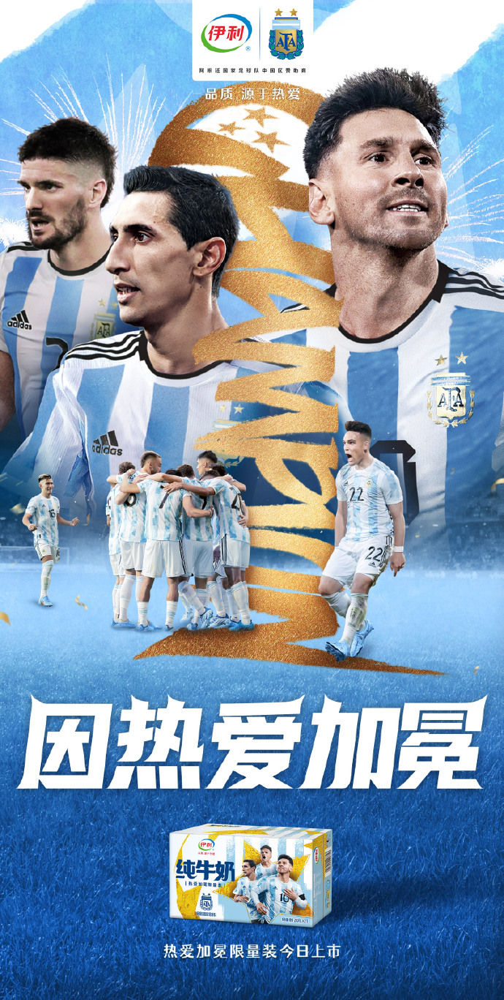
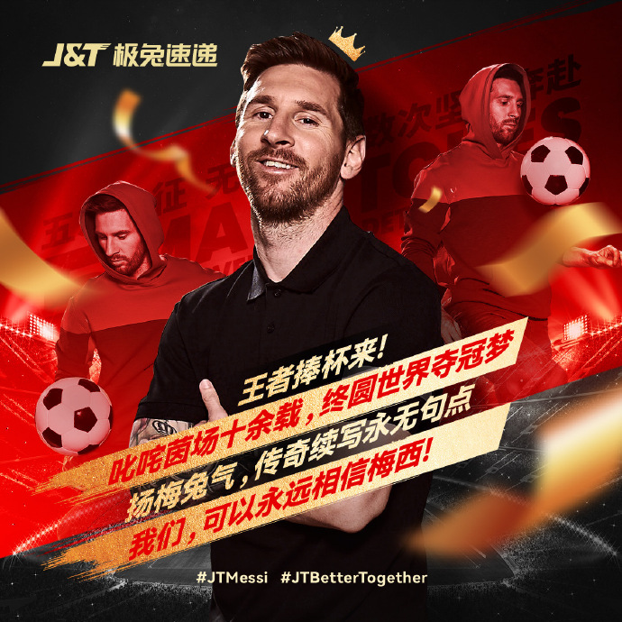
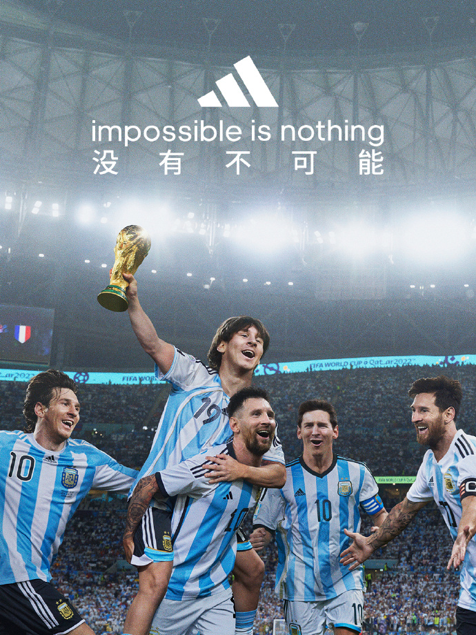
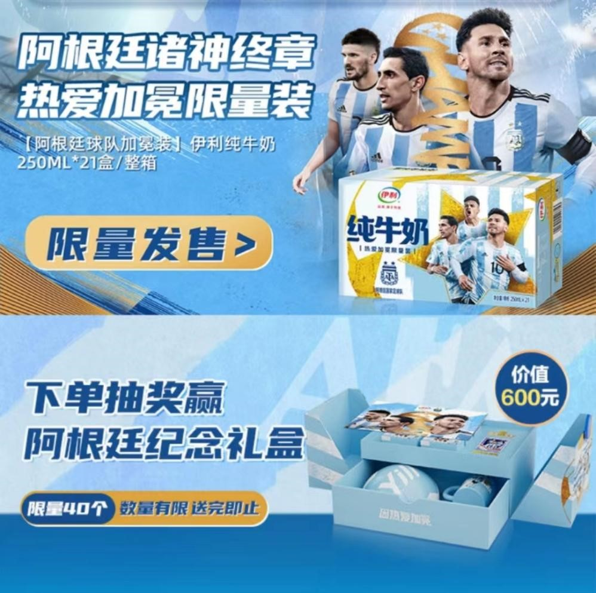
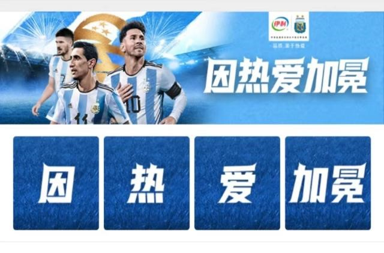
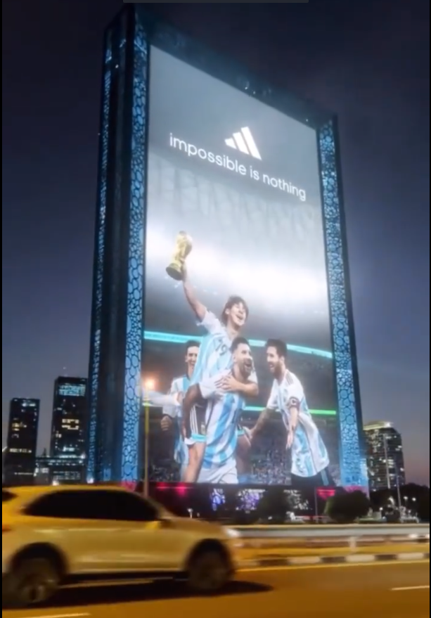
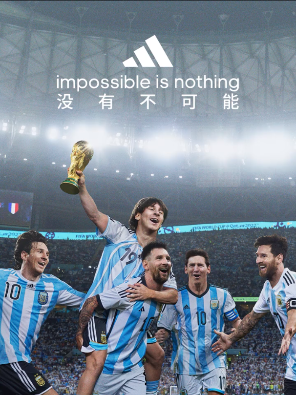
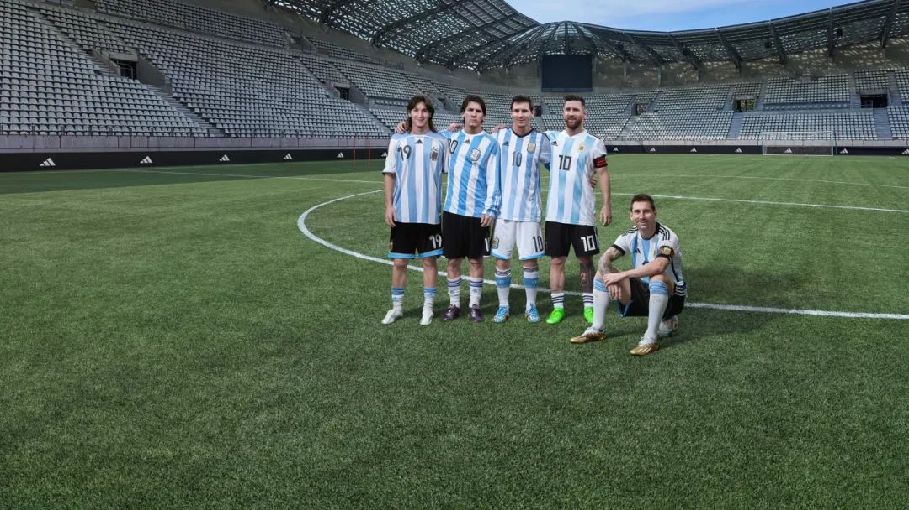

一句话创意
阿根廷夺冠后，品牌不只发布祝贺海报：伊利把结果做成蓝白限量商品，极兔用梅西全球品牌大使关系表达长期陪伴，adidas 则用五届世界杯时间线和迪拜 3D 户外把圆梦升级为品牌故事。
案例为什么成立
Classic 28 应被理解为一场“结果出来后，谁有后手”的竞争，而不是品牌海报合集。阿根廷夺冠与梅西圆梦提供了同一情绪触发器，但不同资源决定了响应上限：没有权益只能表达祝贺；有国家队合作可以调用队徽、球衣和商品；有梅西个人关系可以讲人物历程；同时拥有装备、球员与全球媒介的 adidas，能够把内容扩展到零售和城市户外。
战役节奏
终场前：建立多个赛果分支，锁定素材、法务、商品库存、媒介点位和发布权限。
终场后 0—2 小时：先用官方账号抢占祝贺与人物情绪窗口。
首日：让限量商品、销售页、门店陈列和互动奖励接住搜索与购买需求。
次日及赛后：用 3D 户外、人物时间线、纪录片或长期项目延长冠军叙事。
评估时不能漏掉什么
速度：终场到首发、商品上线和户外亮屏分别用了多久。
相关性：国家队、球星与品牌关系能否被观众准确理解。
承接度：内容是否进入商品、门店、会员或服务，而非停在海报。
增量：品牌搜索、商品售罄、会员新增和认知提升是否高于自然赛果热度。
真实案例物料
以下图片均保留原始发布身份或由权威媒体明确标注原始出处；每张图可点击来源核验。








情绪如何与品牌发生关系
梅西五届世界杯后终于捧杯的圆梦感、阿根廷时隔 36 年再夺冠的集体释放，以及球迷共同见证一代人青春闭环的告别感。
三种关系决定三种动作深度：伊利拥有阿根廷国家队合作资源，可以使用球队资产并快速商品化；极兔绑定梅西个人，可用人物经历讲陪伴；adidas 同时拥有官方装备、国家队与梅西资源，能够把球衣、历史内容和全球户外串成完整资产。
整合战役结构
决赛前预制不同赛果版本与商品/媒介排期；12 月 19 日终场后，品牌先在社交平台释放祝贺素材；伊利同日上线“热爱加冕限量装”与纪念礼盒抽奖，极兔用全球品牌大使海报承接梅西圆梦；12 月 20 日，adidas 在迪拜巨型 3D 户外展示五个年龄阶段的梅西，让赛后热度从即时社交扩展到城市曝光和长期品牌叙事。
真正值得迁移的方法
风险与不可照搬之处
案例信息与来源
全球/中国
国家队合作 / 球星代言 / 官方装备资源
赛果触发型；商品化承接型；人物长线叙事型；实时户外型
- FIFA · 2022-12-19Triumphant Argentina conclude unprecedented FIFA World Cup
- 伊利官网 · 2022-09-29伊利与阿根廷等国家队的合作关系说明
- J&T Express · 2022Welcome Lionel Messi — Global Brand Ambassador
- adidas · 2022-11-14When Football is Everything, Impossible is Nothing
- 4A 广告网 · 2022-12-19阿根廷夺冠，伊利第一时间推出蓝白限量包装
- 4A 广告网 · 2022-12-20庆祝梅西夺冠，adidas 在迪拜亮起巨型 3D 广告牌
- 4A 广告网 · 2022-12-19阿根廷夺冠，冠军球队品牌赞助盘点
来源按品牌/官方发布、官方账号留存、权威媒体、获奖案例库分层记录；品牌与奖项自报结果不视作独立审计。